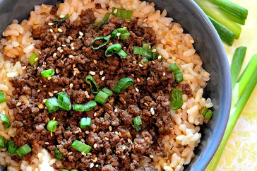

This delicious Korean beef bowl is quick and easy to make with ground beef. It's seasoned with fresh ginger, garlic, soy, sesame seeds, and crushed red pepper, but these ingredients can easily be adjusted to suit your taste. Serve over warm rice or spiralized vegetables.
